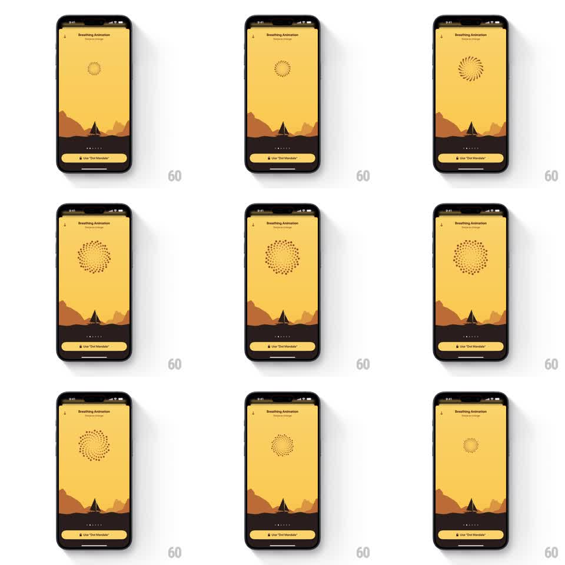

Media
Frame-by-frame

Rebuild this animation 1:1: Unwind's dot mandala breathing guide - over the desert scene, a spiral mandala of small dots expands and contracts in a slow rhythm to pace breathing.

Rebuild this animation 1:1: Unwind's dot mandala breathing guide - over the desert scene, a spiral mandala of small dots expands and contracts in a slow rhythm to pace breathing. ## Integration Integration: stack-agnostic spec - springs given as stiffness/damping, timed motions as duration + curve; map every value to your framework and animation library of choice. ## Scene Unwind's "Breathing Animation" screen: warm yellow sky over dark dunes with a tent silhouette, page dots and a "Use 'Dot Mandala'" button at the bottom. In the sky floats a mandala made of small dark dots arranged in a spiral of concentric rings. The whole mandala blooms outward and collapses back, rings rippling. ## Motion spec Pattern: dot mandala breathing loop, ~8s per breath. - Inhale (~4s): the dot rings expand from the center (radius scale 0.5 to 1.3, ease-in-out), each ring lagging the one inside it by ~100ms so the spiral appears to unfurl; dots stay constant size, only positions move. - Hold at full bloom (~1s) with a faint shimmer (opacity 0.85 to 1 pulsing). - Exhale (~4s): rings contract back, inner rings leading, the spiral tightening into a small dense core before the next inhale. - The dunes, chrome, and button stay frozen; the mandala is the only moving element. ## Calibration - Dots are uniform and crisp - the mandala's beauty is geometric, not glowy. - The spiral arrangement means expansion reads as rotation-adjacent; do not actually rotate. ## Reduced motion The mandala crossfades between its small and large states. ## Don't miss - The pattern is a phyllotaxis-style spiral, not plain concentric circles. - The collapse ends small but never vanishes - the core persists.